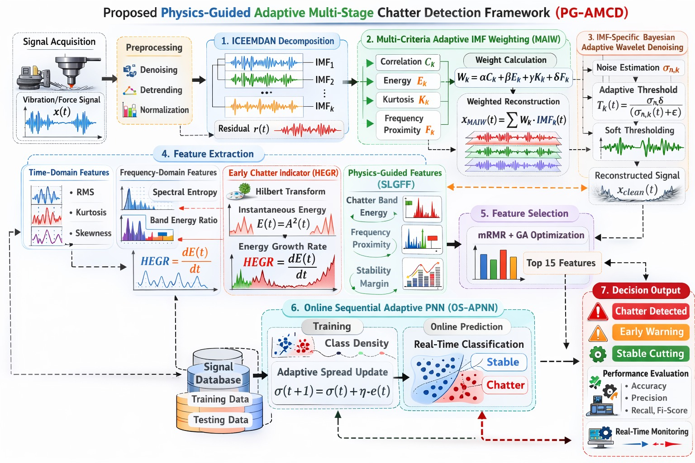
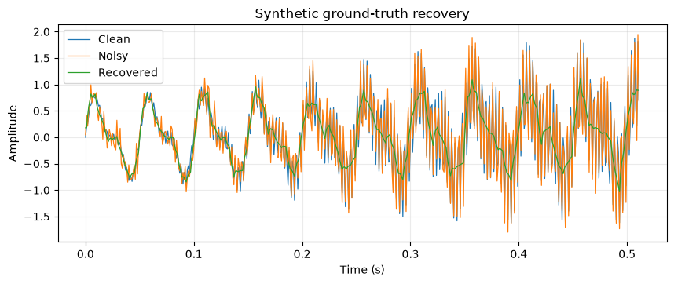
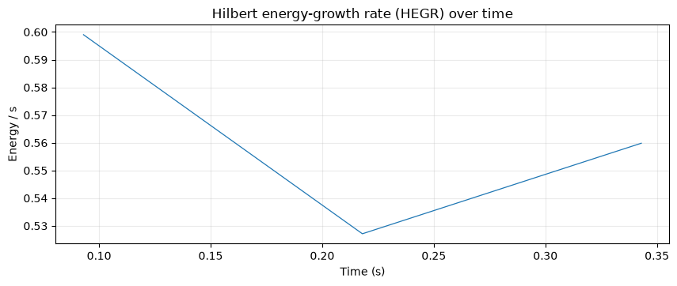

Acceptance run
Complete Stage 1–4 report, figures, tables, scorecards, arrays, and checksummed manifest.
View full report Score JSONA reproducible, auditable signal-processing pipeline with full acceptance evidence, a real-recording demonstration, and explicit real-dataset limitations.
The deterministic synthetic/physics fixture passes every requested acceptance contract.
Both run directories are copied in full, preserving report-to-figure links and machine-readable manifests.
Complete Stage 1–4 report, figures, tables, scorecards, arrays, and checksummed manifest.
View full report Score JSONOne-record execution under the documented nonphysics research profile: 100 / 99.38 / 100 / 100.
View full report Dataset validationThese are curated copies. Every underlying artifact remains available in the complete run folders above.




